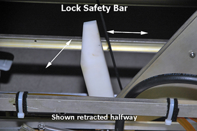
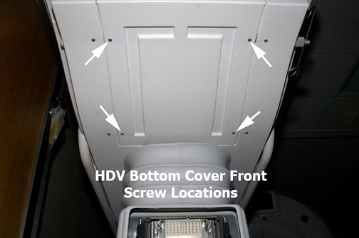
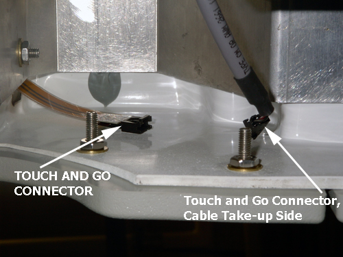
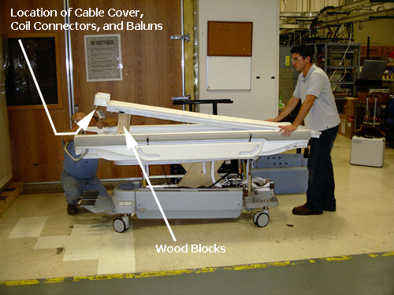
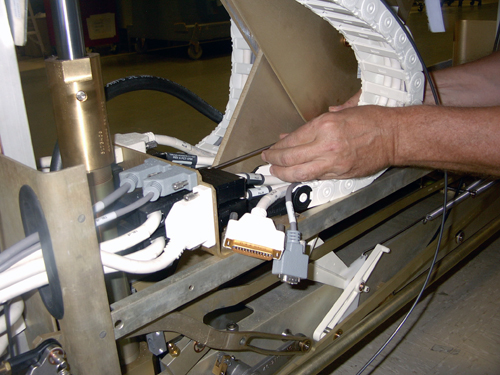
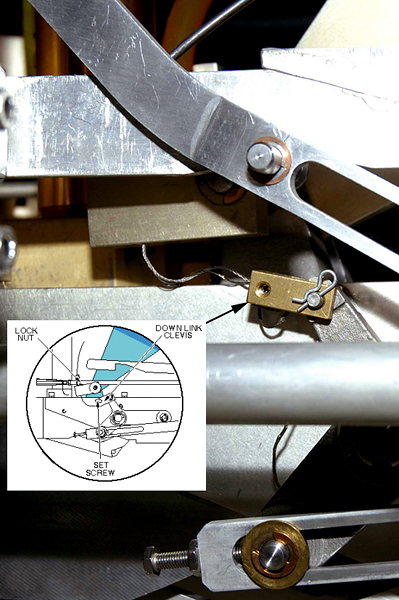
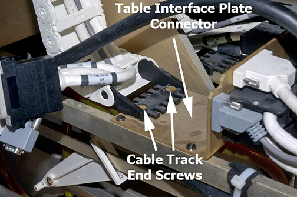
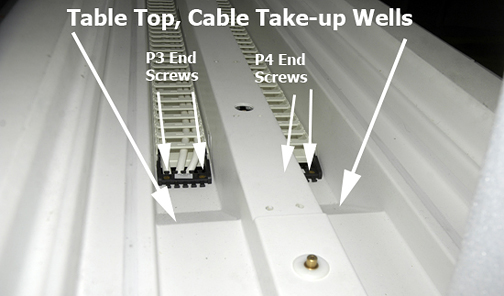
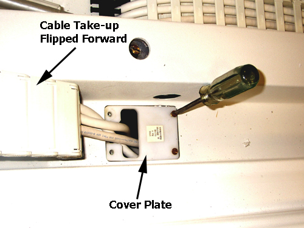

Operating Documentation
Direction 5500113, Rev# 3
Discovery MR750 3.0T Service Methods
Module Version 4.0, Version Date 11/6/09
Operating Documentation |
| Required Persons | Preliminary Reqs | Procedure | Finalization |
|---|---|---|---|
| 2 | Not Applicable | 120 minutes each cable | Not Applicable |
This procedure describes the replacement of the Patient Table Cable Take-up. DVMR introduces a significant design change that places the P3 and P4 coil connectors at the rear of the Patient Table.
The cable take-up for each coil connector is independent of each other. No longer do you need to replace individual cables due to failure within a Cable Take-up. With DVMR, the entire Cable Take-up assembly is replaced. Further, you only need to replace a single Cable Take-up at a time. Replacing one Cable Take-up does not mean changing both.
| Item | Qty | Effectivity | Part# | Manufacturer | |
|---|---|---|---|---|---|
| MCRv Tool Kit (3.0T) | 1 | - | 5182417-2 | - | |
| MCRv Tool Kit (1.5T) | 1 | - | 5182417 | - | |
| Phillips head screwdriver | 1 | - | - | - | |
| Flat head screwdriver | 1 | - | - | - | |
| Standard Allen Wrench Set | 1 | - | - | - | |
| Long shaft, small slotted blade screwdriver | 1 | - | - | - | |
| Pliers | 1 | - | - | - | |
| 10 inch 2 x 4 block of wood | 2 | - | - | - | |
| Standard Wrench Set | 1 | - | - | - | |
| Non-ferrous Phillips screwdriver | 1 | - | - | - | |
| Item | Qty | Effectivity | Part# | Manufacturer |
|---|---|---|---|---|
| Loctite 242 | 1 | - | 46-170686P1 | - |
| Item | Qty | Effectivity | Part# | Manufacturer | |
|---|---|---|---|---|---|
| Cable Track | 1 | - | 5181517 | - | |
Undock Patient Table and move it out of magnet room.
Depending on which Cable Take-up (left or right) you are replacing, remove the appropriate Lower Base Side Cover, and then fasten the Upper Bellows in the up position. For more information, see the Patient Table Upper Bellows and Lower Base Side Cover Removal procedure.
Illustration 1: Patient Table Covers

| ||||
| PERSONAL INJURY POSSIBILITY! | ||||
| WHEN PERFORMING MAINTENANCE ON THE TABLE IN ITS UP POSITION, SEVERE PERSONAL INJURY CAN OCCUR IF TABLE IS ACCIDENTALLY LOWERED DURING MAINTENANCE PERFORMANCE. | ||||
| ENSURE THAT THE LOCK SAfety BAR IS SAFELY IN PLACE. |
Lower the Table Lock Safety Bar, and then lower the table to ensure weight is resting on Safety Bar.
Illustration 2: Table Lock Safety Bar

Remove bottom front cover (located on the front underside of the Patient Table, see Illustration 3) and the right or left table side cover (see Illustration 4) depending on which cable track is being removed.
Illustration 3: Bottom Front Cover

| NOTE: | When standing at the foot of the Patient Table facing the magnet, the cable take-up P3 is on the right side and cable take-up P4 is on the left side. |
Illustration 4: Table Side Cover, Bottom Side Screws

Disconnect the gray TBL P3-J7 or P4-J7 cable from the Touch and Go connector located in the upper left or right corner inside the Table Top.
Illustration 5: Touch and Go Connector

Manually unlock the cradle and move it forward approximately 24 inches to clear the guide rails.
| NOTE: | Two people are necessary to remove the cable take-up from the cradle. |
Illustration 6: Guide Rail Clearance

Prop up the rear of the cradle using two blocks of wood each approximately 10 inches in length.
Illustration 7: Cradle Removal

Using a 9/64 Allen wrench, one person removes the screws from (in order) the cable cover, coil connector, and balun for both cable take-ups (located on the rear underside of the cradle) while the second person holds onto the front of the cradle to make sure it doesn’t slide off the table top.
| NOTE: | Even though only one cable take-up is being replaced, this step requires removal of both cable take-up connections from the bottom rear of the cradle because the cradle must be removed from the Patient Table to access the cable take-up in the track wells. |
Remove the cradle from the Patient Table and set it on a flat surface.
Depending on which take-up you are replacing, go to the left or right side of the front lower table chassis and disconnect all take-up connectors from the rear side of the Table Interface Panel (see Illustration 8 and Illustration 13).
Illustration 8: Right Side View of Table Interface Panel Connectors

| NOTE: | Standing at rear of table, the right side is the P3 Cable Take-up, the left side is the P4 Cable Take-up. To make accessing the P4 connectors on the Table Interface Panel easier, remove the 3/8 inch nut and associated washer from front and rear of upper chassis rail. |
Illustration 9: Removing the Left Side Upper Chassis Rail

| NOTE: | Be careful with the J1/J2 and J4/J5 black connectors. They use small, standard head screws that are made of lightweight aluminum and can be easily stripped. |
Illustration 10: Long Shaft Screwdriver

| NOTE: | Step 11 coincides with the P4 Cable Take-up only. If replacing the P3 Cable Take-up, skip Step 11. |
To remove the main cradle latch cable, which is threaded through the P4 take-up track, do the following:
Using an 5/64 Allen wrench, loosen set screw at Down Link Clevis and then unthread cable.
Illustration 11: Main Cradle Latch Cable Path and Down Link Clevis

Pull cable through to clear the back side of the cable track and underside of cable take-up lead.
Illustration 12: Path of Main Cradle Latch Cable Behind P4 Cable Track

Remove both cable track end screws from Table Interface Plate Connector.
Illustration 13: Cable Track End Screws

Follow cable track up to underside of Table Top and pull out disconnected gray P3-J7 or P4-J7 cable (previously disconnected in Step 6).
Illustration 14: Underside of Table Top

Remove cable take-up lead brass screws. See Illustration 14.
Remove two slotted brass screws from cable take-up lead in cable well.
Illustration 15: Table Top, Take-up End Screws

Pull rear of cable take-up and position it to lay out at front of Patient Table to expose cover plate and screws. Remove both screws.
Illustration 16: Cover Plate

To fully remove the cable take-up assembly from the Patient Table, feed the cable take-up assembly up through the hole in the Table Top.
Place the new cable-take up assembly into the Table cable track well and feed the take-up through the Table hole.
Secure cover plate with two brass screws. See Illustration 16.
Lay out cable take-up assembly to point to rear of Patient Table to allow access to the cable-take up lead.
Secure cable take-up lead to cover place with two brass screws.
At underside of Table Top, secure cable take-up lead to table. See Illustration 14.
Reroute and reconnect P3-J7 or P4-J7 Touch and Go gray cable.
| NOTE: | Pay careful attention that you route cable through two cable (tie wrap) supports before reconnecting. |
For P4 cable take-up replacement only, reroute and reconnect main cradle latch cable to Down Link Clevis and at end of this procedure, make appropriate adjustments to cable per instructions in Section 3.2 Cradle Release Block Retraction Adjustment, Cradle Release Block Adjustment .
| NOTE: | DO NOT make Main Cradle Latch Cable adjustments at this time. |
Reconnect all cables on the Table Interface Panel.
| NOTE: | Be careful with the J1/J2 and J4/J5 black connectors. They use small, standard head screws that are made of lightweight aluminum and can be easily stripped. |
Secure cable take-up lead brass screws onto Table Interface Panel. See Illustration 13.
If replacing the P4 cable take-up assembly, then replace the upper chassis rail front and rear 3/8 nut and washer. See Illustration 9.
Place cradle back onto Patient Table and prop up with two blocks of wood (see Illustration 7).
On the rear underside of the cradle, replace (in order) the balun, coil connector, and cable cover for each cable take-up. Remove the blocks of wood and set cradle back onto Table Top at the home position.
Replace Front Bottom Cover and Table Side Cover.
Ensure that Lock Safety Bar is in the vertical (up) position.
Move Patient Table into magnet room and dock.
Make Main Cradle Latch cable adjustments as identified in Step 7 if P4 cable take-up was replaced
Undock Patient Table and use non-ferrous Phillips screwdriver to replace lower base side cover, and then place Upper bellows in down position.
Redock Patient Table.
Run the Coil Datapath Diagnostics (MCRv) tool.